何気ない瞬間を、ありのまま受け付けています。
ABOUT THE BUREAU
シカーダ星人。その名は、昆虫の「セミ」に由来します。地球から遥か遠く離れた銀河の彼方、静かな惑星に暮らす人々です。
彼らは、成体として過ごす期間が地球時間でわずか7日間という、とても短い時間を生きる種族です。地球人にとっての7日間は、仕事をして、食事をして、眠って、気がつけばあっという間に過ぎ去ってしまう時間かもしれません。
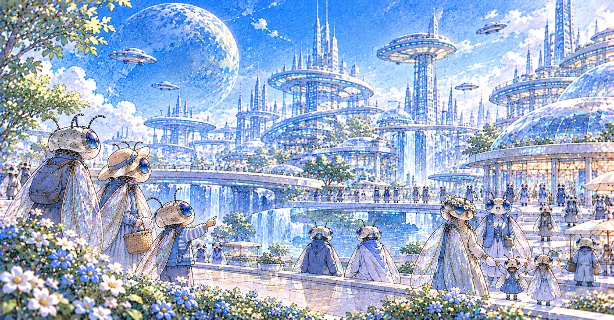
けれども、彼らにとっては、その一日一日がかけがえのない時間です。
何気ない会話。いつもと変わらない朝。特別な成果のない一日。地球人が「何でもないこと」として見過ごしてしまうような出来事にも、彼らは価値を見出します。
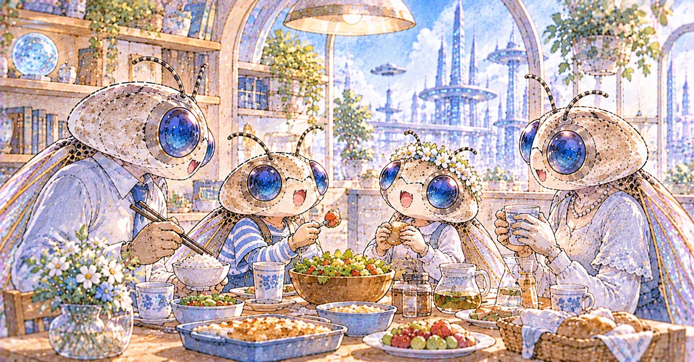
ただし、7日間は彼らの生涯のすべてではありません。シカーダ星人の一生は、幼年期、青年期、成体期という三つの段階でできています。
卵から孵化した幼体は、家庭に設けられた育成ポッドで育ちます。腐葉土を基盤とした有機的な空間で、栄養や水分、温度や湿度が整えられています。幼年期は約3年。前半は両親に養育され、脱皮を重ねながら少しずつ活動範囲を広げ、やがて自らの意思で生活の場を選べるようになります。
続く青年期は約4年。心身の自立が進み、パートナーと家庭を築き、次の世代を迎える人もいます。両親や親族が力を合わせて幼体を見守り、ともに過ごす日々は、かけがえのない家族の時間になります。
そして最後の脱皮を経て、成体期が訪れます。約7日間のこの時間は、自らの生涯を振り返るためのものです。これまでの経験をたどり、大切な存在と過ごし、記憶や記録を次の世代へ手渡します。けれど、何かを残すことは義務ではありません。特別な功績がなくても、誰の記憶に残らなくても、過ごしてきた時間の価値は変わりません。最後の日まで食事を楽しみ、誰かと笑い、何気ない日常を過ごす。それもまた、大切な生涯の一部です。
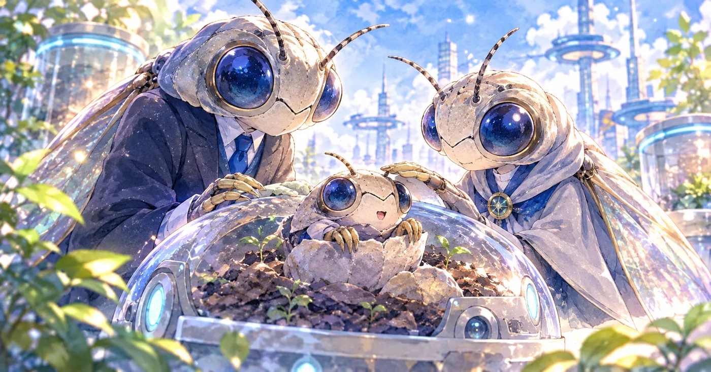
幼年期には幼年期の、青年期には青年期の、成体期には成体期の価値があります。成体になることだけが人生の意味ではなく、子を育てることだけが生命の価値を証明するわけでもありません。最後に何かを残せたかどうかも、その価値を左右しません。ただ、その生命が存在し、それぞれの時間を過ごしてきたという事実そのものに、価値を見出すのです。
この考え方から、シカーダ星では、個体が過ごした時間を記録する文化が根づきました。記録は優劣をつけるための評価表ではなく、その個体が確かにそこにいたことを受け止めるためのものです。
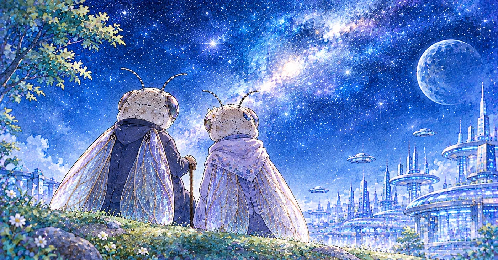
存在肯定証明書発行局は、この思想を公的な仕組みとして担う機関です。申請された出来事を記録し、その日を生きた事実を証明書として発行します。出来事の正しさや価値を審査することはありません。
肯定の対象は、成果や評価とは切り離された「存在そのもの」です。反省することも、失敗から学ぶことも妨げません。ただ、うまくいかなかったからといって、その人の存在まで否定する必要はないと、当局は考えます。
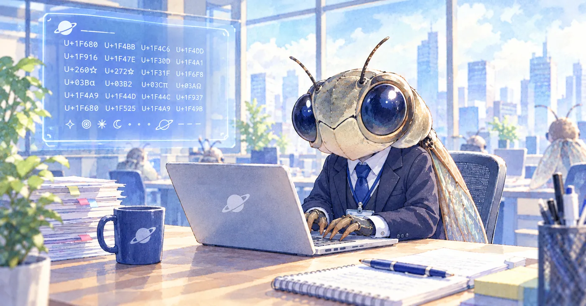
当局が発行する証明書には、シカーダ星歴を併記します。
当局が発行する証明書は、ありのままの出来事を記録し、対象の存在を前向きに後押しするものです。
肯定の対象は存在そのものであり、行動を正当化するものではありません。犯罪その他の違法・不当な行為を、肯定・容認・推奨するものではないことをご承知ください。
犯罪など法的な判断に関する事項は、申請のあった当該惑星における現地の法令に準じるものとします。
あなたの存在を、
あなたの成果で
証明する必要はありません。
GALLERY
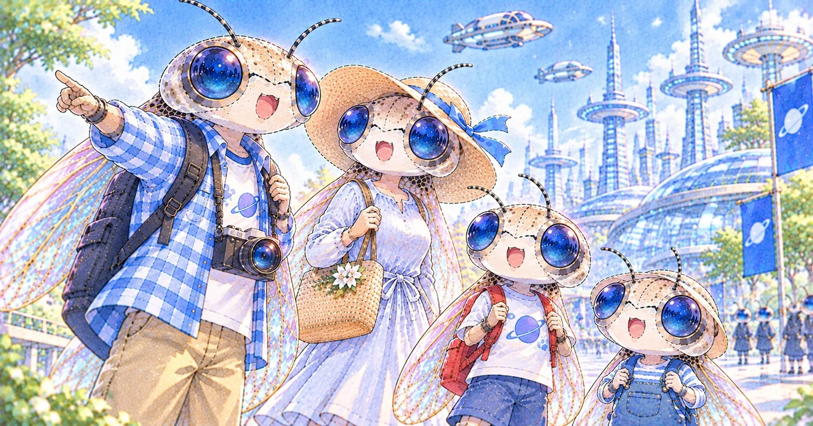
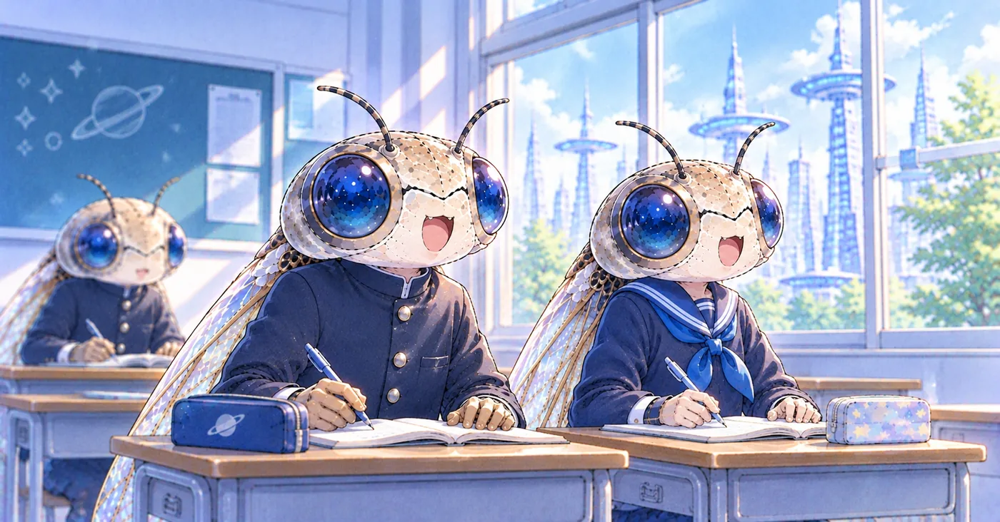
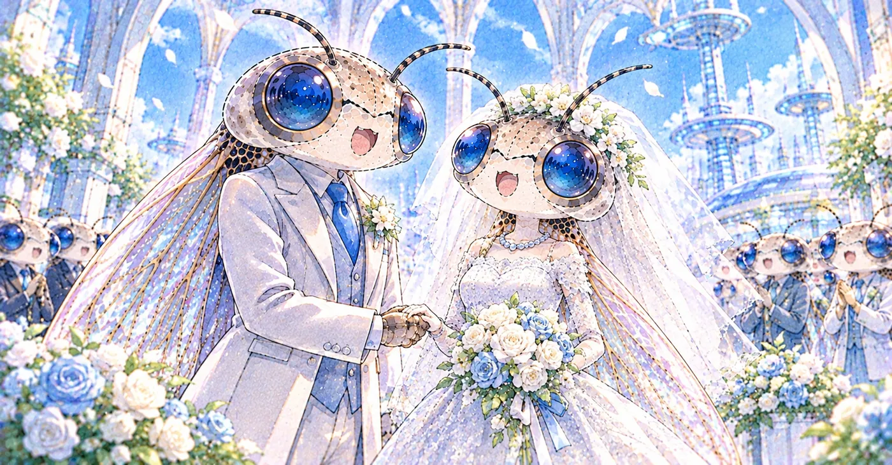
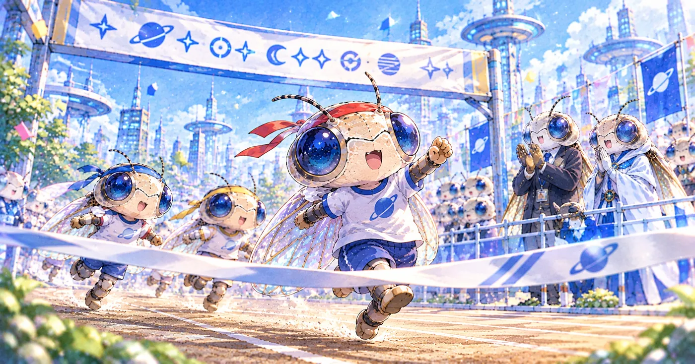
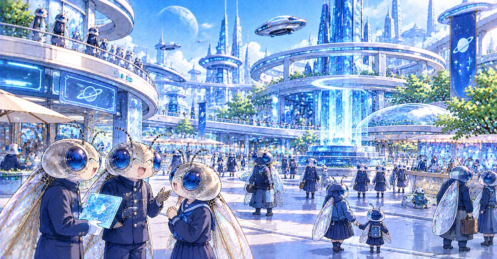
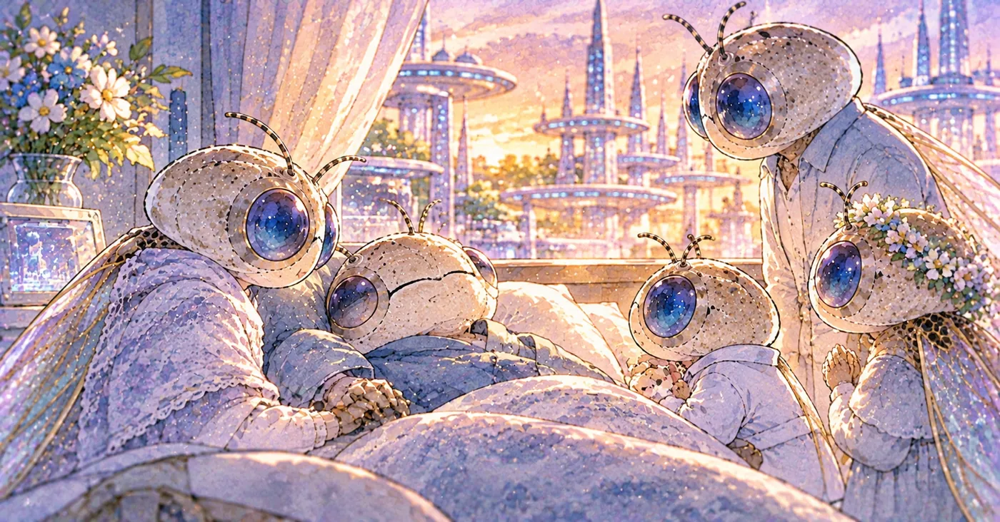
APPLICATION FORM